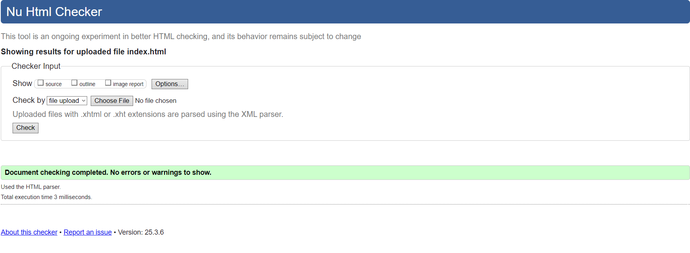
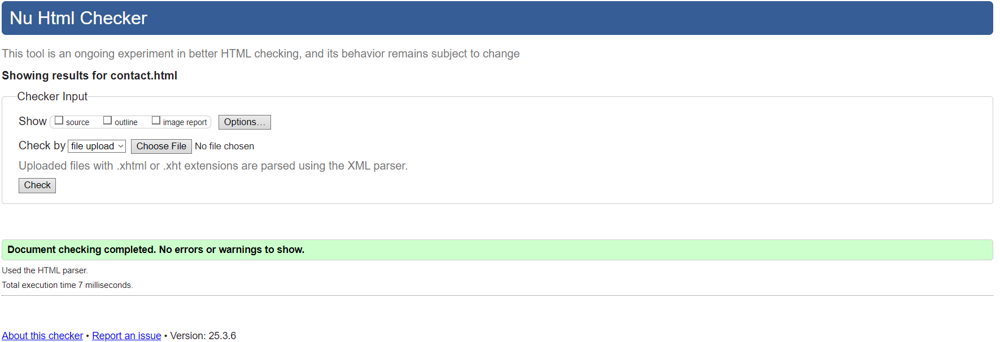
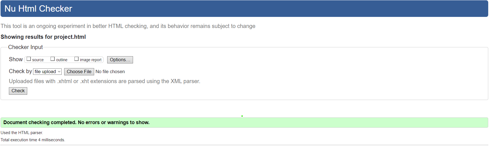
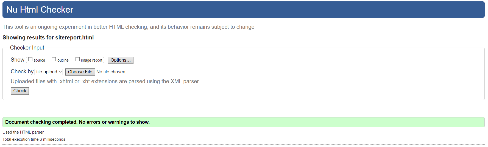
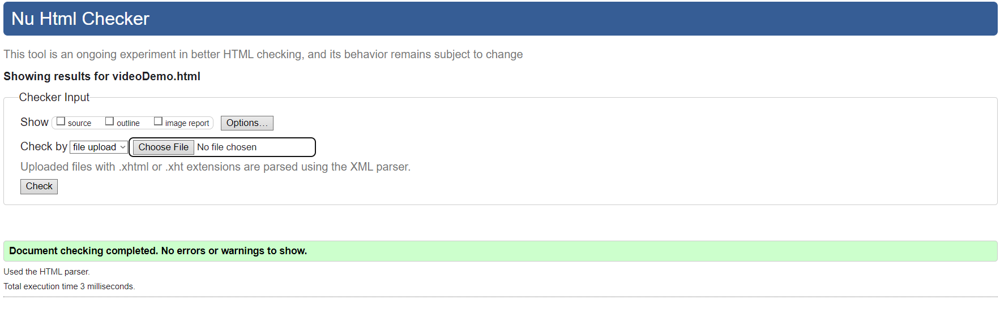
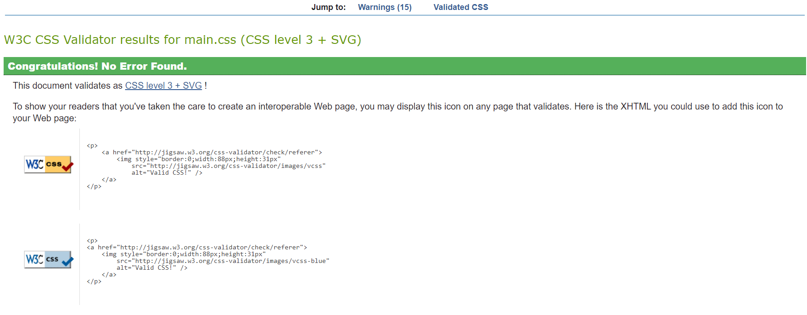
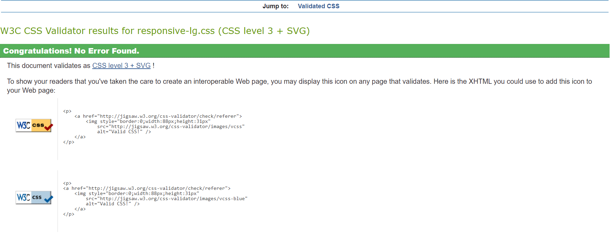
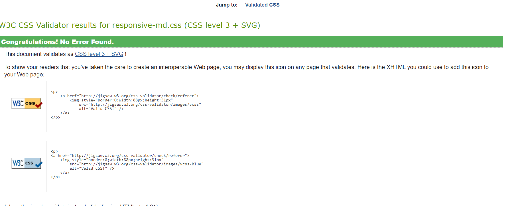
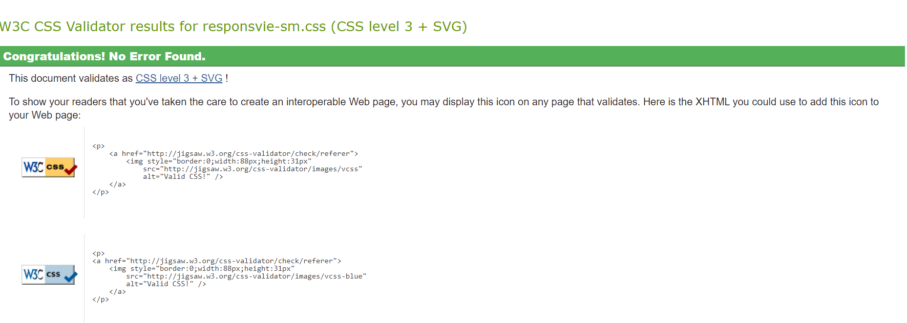

Site Report
An introspective account of my experience developing websites and building this portfolio website.
Development Experience
Learning web development has been a pleasant and hard experience for me. Having started out knowing nothing about HTML or CSS, I have progressively improved my abilities via constant practice and problem-solving.
Understanding and successfully putting responsive design ideas into practice was the most difficult part. To make sure my website functions properly on all devices, I invested a lot of time in learning about media queries and adaptable layouts.
One of the highlights was when I used CSS transitions to successfully create my first interactive element. My sense of success was greatly enhanced when I saw the fluid animations function as planned.
Design Decisions
In order to successfully present my work and make it easy to explore, I wanted to design this portfolio with a straightforward, professional appearance.
Color Scheme
To keep the attention on the information, I went with a simple color scheme. The professional appearance of the primary hue led to its selection, while the accent color adds visual appeal without overpowering the design.
Typography
For easier screen reading, I went with sans-serif typefaces. The heading typeface was used to maintain professionalism while incorporating personality.
Inspiration
My design was influenced by several portfolio websites I admired:
Technical Implementation
I structured my HTML to be semantic and accessible, using appropriate tags like <header>, <main>, <section>, and <footer> to improve both SEO and accessibility.
In order to separate global styles from particular page elements, I used a component-based method to arrange my styles in CSS. The code became easier to debug and more maintainable as a result.
The implementation of the responsive grid layout for the projects page was the most difficult technical component. In order to design a layout that works effectively on a variety of screen sizes, I learned about CSS Grid and Flexbox.
Validation
HTML Validation
Index Page
Contact Page
Project Page
Site Report Page
Video Demo Page
CSS Validation
Main stylesheet
Responsive Lg stylesheet
Responsive Md stylesheet
Responsive Sm stylesheet
Video Demonstration
My video demonstration can be viewed on the Video Demo page or directly on YouTube.
I describe the design and technical choices I made as well as the main elements of this portfolio website as I go through the creation process in the video.